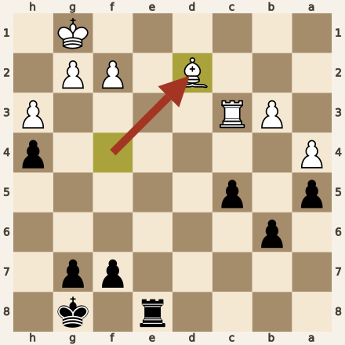
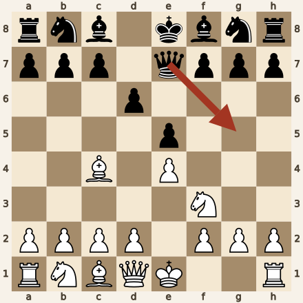
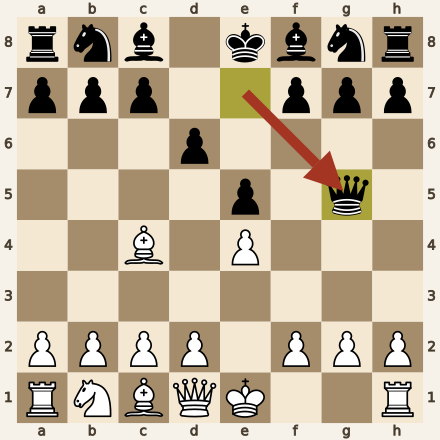
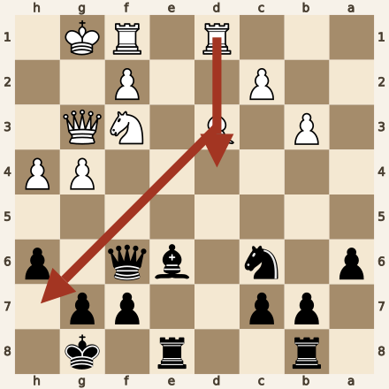
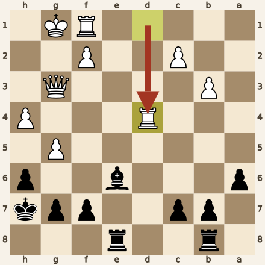

다음 대국에서 고칠 세 가지
가장 먼저 고칠 것은 공격을 시작하기 전 내 기물의 안전을 확인하는 습관이다. 최근 실전 세 장면에서 놓친 위협과 개선 수를 비교해 보자.
1. 상대가 움직이면, 새 공격부터 찾기
백이 방금 Bf4를 뒀다. 흑은 무엇부터 확인해야 할까?

놓친 것
30...h4로 폰을 밀었지만, f4 비숍은 이미 d2 룩을 공격하고 있었다. 31.Bxd2로 룩을 잃었다.
다음에는
30...Rd7로 공격받는 룩부터 피한다. 흑은 룩 두 개로 백의 룩·비숍을 상대하던 유리한 상황이었다. 폰을 밀기 전에 그 우세를 지키는 게 먼저다.
실전 습관
상대의 마지막 수에서 새로 열린 선을 따라가고, 그 선 위의 내 기물을 확인한다.

h4 Bxd2 · 개선: Rd7
2. 공격하기 전에, 도착 칸이 안전한지 보기
f7을 공격하려고 Ng5를 두어도 될까?

놓친 것
4.Ng5? 뒤 4...Qxg5로 나이트를 그냥 잃었다. e7 퀸은 f6을 거쳐 g5를 공격한다. 이 판은 나중에 이겼지만, 이 수는 고쳐야 한다.
다음에는
4.O-O로 킹을 안전하게 하고 룩을 연결할 준비를 한다. f7 공격은 기물을 공짜로 주지 않는 조건에서 시작한다.
실전 습관
내가 노리는 상대 기물보다 먼저, 내가 둘 칸을 상대가 잡을 수 있는지 확인한다.

Ng5 Qxg5 · 개선: O-O
3. “잡으면 되잡는다”에서 한 수 더 계산하기
24...Nd4로 나이트를 중앙에 보내도, 퀸으로 되잡을 수 있을까?

놓친 것
d4 나이트를 잡히면 Qxd4로 되잡을 생각이었지만, 백에게 Bh7+라는 중간 체크가 있다. 비숍이 d파일을 비우면 d1 룩이 d4 퀸을 잡는다.
다음에는
처음부터 24...Bd5를 후보로 잡는다. 나이트를 c6에 두고 비숍을 중앙으로 옮기면 이 되잡기 함정을 피할 수 있다.
실전 습관
교환을 계산할 때 상대의 체크를 끼워 넣어 본다. 특히 퀸과 룩이 같은 파일에 있으면, 그 사이 기물이 체크하며 비킬 수 있는지 본다.

Nd4 g5 Qd8 Nxd4 Qxd4 Bh7+ Kxh7 Rxd4 · 개선: Bd5
매 수 직전, 세 가지만
- 상대가 방금 어디를 공격했나? 내 퀸·룩부터 확인한다.
- 내가 둘 칸은 안전한가? 상대 퀸·비숍·나이트의 공격을 확인한다.
- 되잡기 사이에 체크가 있나? 체크 뒤에도 계산한 교환이 성립하는지 본다.